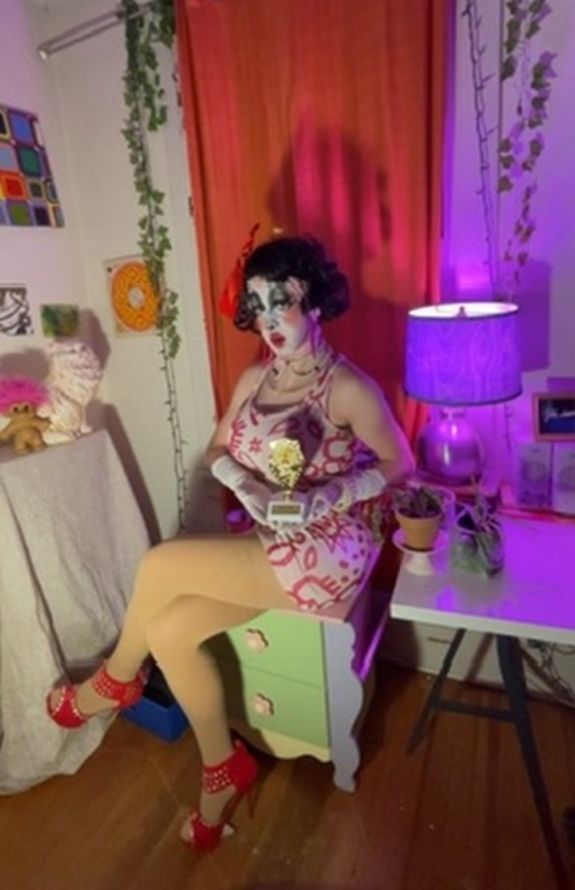
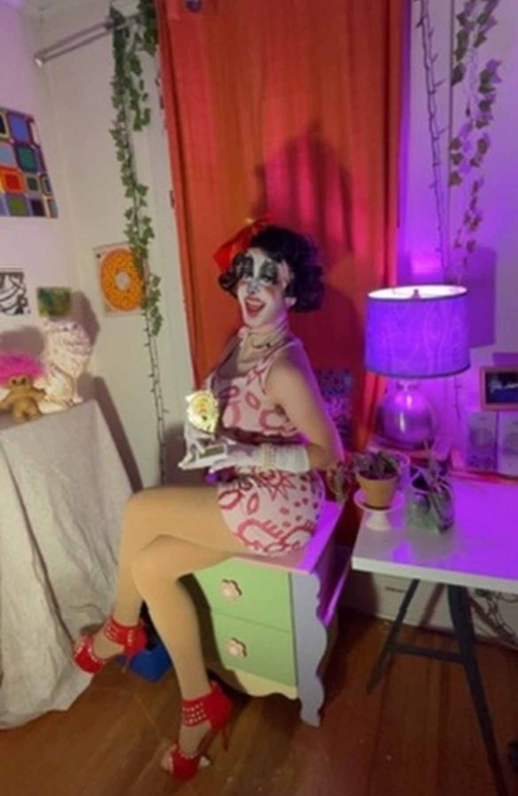

The site I choose was called WhatNot. It is an app on the Iphone which allows you to do live auctions for items. It works very similiar to instragram live,where people can chat and comment on your objects. I went live on the app, dressed as Ms. Pacman, attempting to sell pacman trophies. This took place on Friday 3/9/2024, and the effects were definetly unexpected. People joined my livestream, but left very quickly and did not interact much with me. I expected more people to be interested, but most people who were using the app at the time were in other livestreams. No one purchased my trophies, but I do think that the people who joined were a bit shocked by my presence on the app. If I had more time to expand on this I would advertise my live a bit more so that I could get people to come. I would also plan some more things to sell, I only had one type of object so It did not give me a lot to talk about.
 